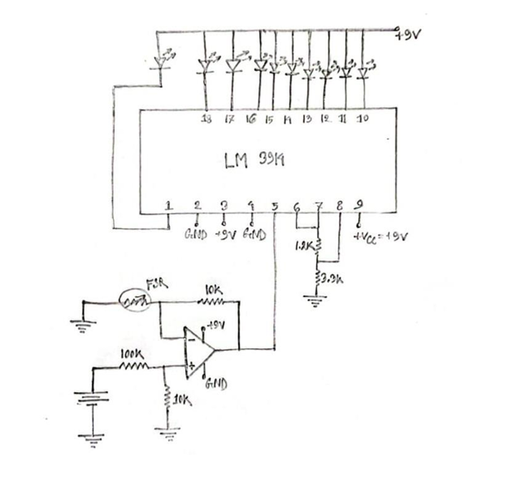

MEASUREMENT / INSTRUMENTATION
Determination of Applied Force Using Force Sensitive Resistor
A sensor-based instrumentation project that detects applied force using a Force Sensitive Resistor, conditions the resulting electrical signal and provides a visual indication of force level using a 10-LED bar graph.
COURSE
EEE-2212 — Measurement and Instrumentation Laboratory
SENSOR
Force Sensitive Resistor SEN-0057
FORCE RANGE
0.1 N – 10 N
OUTPUT
10-Level LED Bar Graph
01 / OVERVIEW
Project Overview
The project was developed to determine an approximate applied-force level using a Force Sensitive Resistor as the sensing element.
Changes in FSR resistance are converted into an electrical signal, conditioned using an operational amplifier and displayed using a 10-level LED bar graph.
02 / PROJECT MEDIA
Hardware & Circuit


03 / COMPONENTS
Main Components
04 / SYSTEM ARCHITECTURE
Three-Stage Measurement System
Force Sensitive Resistor
Converts applied force into a change in electrical resistance.
Differential Amplifier
The µA741 processes and amplifies the voltage variation produced by the FSR network.
LM3914 LED Display
Converts the conditioned voltage into a 10-level visual force indication.
05 / SENSOR PRINCIPLE
Force Sensitive Resistor Operation
The FSR contains conductive and resistive layers separated by a spacer. With no applied force, contact between the layers is minimal and the sensor resistance remains very high.
Applying force brings the conductive and resistive regions into greater contact. This creates improved current paths through the resistive material and causes the FSR resistance to decrease.
- Sensor: SEN-0057 Force Sensitive Resistor
- Overall length: 1.75 in
- Overall width: 0.28 in
- Sensing diameter: 0.16 in
- Force sensitivity range: 0.1 N to 10 N
06 / WORKING PRINCIPLE
Complete System Operation
Force is applied to the FSR sensing area.
Increasing force causes the FSR resistance to decrease.
The resistance change alters the voltage at the inverting input of the µA741.
A fixed reference voltage is supplied to the non-inverting input using a resistor divider.
The differential amplifier produces an output based on the difference between these voltages.
The conditioned output voltage is supplied to the LM3914 input.
The LM3914 activates an increasing number of LEDs as the applied-force level increases.
07 / OUTPUT
LED Force-Level Indication
The LM3914 operates in bar mode. With no applied force, the LEDs remain off. As force increases, progressively more LEDs illuminate.
At the highest force level represented by the circuit, all ten LEDs illuminate, allowing the applied force to be approximated visually.
08 / TECHNICAL LEARNING
Skills Applied
- Sensor interfacing
- Force Sensitive Resistor operation
- Analog signal conditioning
- Operational amplifier circuits
- LM3914 LED bar-graph interfacing
- Measurement and instrumentation principles
- Breadboard circuit implementation